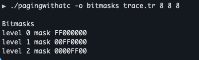
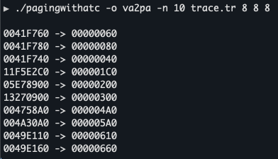
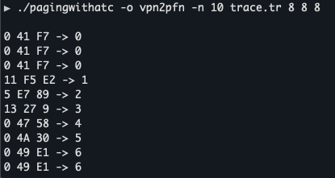
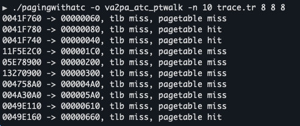
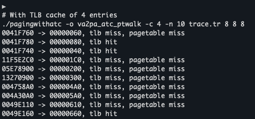

A multi-level page table simulation with TLB support for virtual memory management
This project implements a sophisticated virtual memory management system with multi-level page tables and an address translation cache (TLB). It simulates demand paging with configurable page table levels, comprehensive logging modes, and advanced memory management techniques.
How a virtual address is broken down and translated:
Virtual Address: 0x0041F760
┌────────────┬────────────┬────────────┬──────────┐
│ Level 0 │ Level 1 │ Level 2 │ Offset │
│ 0x00 │ 0x41 │ 0xF7 │ 0x60 │
│ (8 bits) │ (8 bits) │ (8 bits) │ (8 bits) │
└────────────┴────────────┴────────────┴──────────┘
│ │ │ │
│ │ │ │
▼ ▼ ▼ │
┌──────────┐ ┌──────────┐ ┌──────────┐ │
│ Level 0 │→│ Level 1 │→│ Level 2 │ │
│Page Table│ │Page Table│ │Page Table│ │
└──────────┘ └──────────┘ └────┬─────┘ │
│ │
▼ │
┌─────────┐ │
│ PFN │ │
│ 0x000 │ │
└────┬────┘ │
│ │
└──────┬──────┘
│
▼
Physical Address: 0x00000060
The decision process for address translation with caching:
┌─────────────────────┐
│ Virtual Address │
│ Received │
└──────────┬──────────┘
│
▼
┌─────────────────────┐
│ Extract VPN from │
│ Virtual Address │
└──────────┬──────────┘
│
▼
┌─────────────────────┐
│ Check TLB for │
│ VPN → PFN mapping │
└──────────┬──────────┘
│
┌────────────────┴────────────────┐
│ │
▼ ▼
┌────────────────┐ ┌────────────────┐
│ TLB HIT! │ │ TLB MISS │
│ Return cached │ │ │
│ PFN │ └───────┬────────┘
└───────┬────────┘ │
│ ▼
│ ┌─────────────────────┐
│ │ Page Table Walk │
│ │ Level 0 → 1 → 2 │
│ └──────────┬──────────┘
│ │
│ ▼
│ ┌─────────────────────┐
│ │ Get PFN from │
│ │ leaf page table │
│ └──────────┬──────────┘
│ │
│ ▼
│ ┌─────────────────────┐
│ │ Update TLB with │
│ │ new VPN → PFN │
│ │ (LRU replacement) │
│ └──────────┬──────────┘
│ │
└────────────────┬────────────────┘
│
▼
┌─────────────────────┐
│ Combine PFN with │
│ Offset to get │
│ Physical Address │
└─────────────────────┘
How bitmasks extract page numbers from each level:
Address: 0x0041F760 = 00000000 01000001 11110111 01100000
Level 0: FF000000 = ████████ ░░░░░░░░ ░░░░░░░░ ░░░░░░░░
AND Result → 00000000 = 0x00
Level 1: 00FF0000 = ░░░░░░░░ ████████ ░░░░░░░░ ░░░░░░░░
AND Result → 01000001 = 0x41
Level 2: 0000FF00 = ░░░░░░░░ ░░░░░░░░ ████████ ░░░░░░░░
AND Result → 11110111 = 0xF7
Offset: 000000FF = ░░░░░░░░ ░░░░░░░░ ░░░░░░░░ ████████
AND Result → 01100000 = 0x60
████ = Bits extracted ░░░░ = Bits masked out
The hierarchical page table with demand paging:
┌─────────────────┐
│ Root (L0) │
│ Page Table │
│ 256 entries │
└────────┬────────┘
│
┌───────────────────────┼───────────────────────┐
│ │ │
▼ ▼ ▼
┌───────────┐ ┌───────────┐ ┌───────────┐
│ L1[0x00] │ │ L1[0x41] │ │ L1[...] │
│ (sparse) │ │ 256 entries│ │ (NULL) │
└─────┬─────┘ └─────┬─────┘ └───────────┘
│ │ Demand Paging:
┌─────┴─────┐ ┌─────┴─────┐ Only allocated
▼ ▼ ▼ ▼ when accessed!
┌───────┐ ┌───────┐ ┌───────┐ ┌───────┐
│L2[...]│ │L2[...]│ │L2[0xF7]│ │L2[...]│
│ NULL │ │ NULL │ │Map Ent│ │ NULL │
└───────┘ └───────┘ └───┬───┘ └───────┘
│
▼
┌───────────┐
│ PFN: 0 │
│ Valid: 1 │
└───────────┘
The program supports six different output modes for comprehensive analysis:
Displays bitmasks for each page table level:
Virtual to physical address translation:
Virtual Page Number to Physical Frame Number mapping:
Translation showing TLB hits/misses and page table walk details:
Translation with cache performance details:
This project demonstrates mastery of: